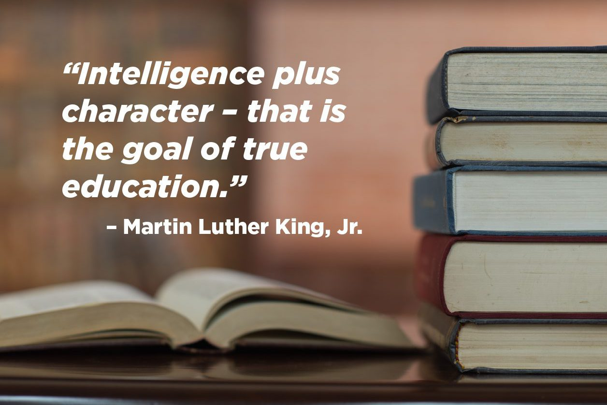
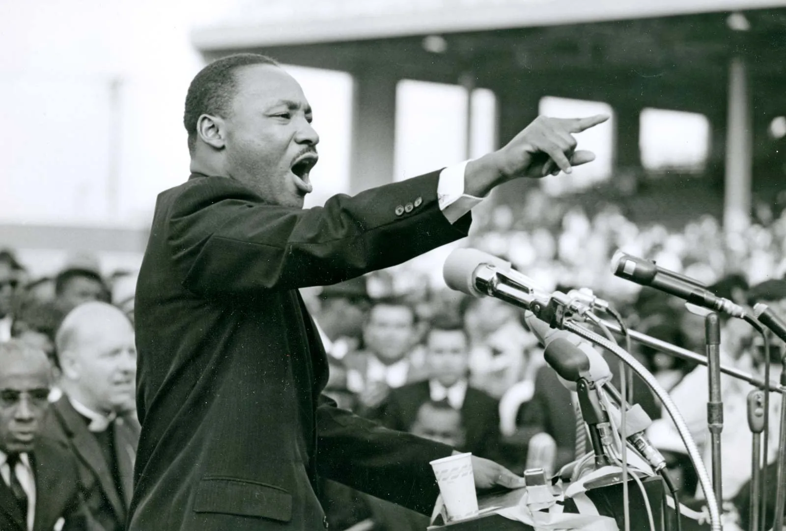

Born: January 15, 1929 in Atlanta, Georgia.
Died: April 4, 1968 in Memphis, Tennessee.
Martin Luther King Jr. was the ninth of Daddy King's nine children. His father, Martin Luther King Sr., a Baptist minister, and his mother, Alberta Williams King, a schoolteacher, raised him in a middle-class family in Atlanta, Georgia.
King attended segregated schools, but he was expelled from the high school in 1942 for participating in a sit-in protest against racial discrimination. After being expelled, he attended Morehouse College in Atlanta for two years before transferring to Crozer Theological Seminary in Pennsylvania, where he earned his Bachelor of Divinity degree in 1951.
Martin Luther King Jr. was a prominent leader in the civil rights movement of the 1950s and 1960s in the United States. His activism was marked by nonviolent resistance and a commitment to achieving racial equality and justice through peaceful means.
King became involved in civil rights activism through the Southern Christian Leadership Conference (SCLC), which he helped found in 1957 along with Ralph Abernathy, Fred Shuttlesworth, and other civil rights leaders. He served as the SCLC's president until his death in 1968.
King's civil rights activism included leading protests against segregation and discrimination, organizing the Montgomery Bus Boycott in 1955, delivering speeches and sermons, and advocating for voting rights, economic justice, and social equality.
Martin Luther King Jr. was assassinated on April 4, 1968, in Memphis, Tennessee, while supporting a strike by sanitation workers. His death galvanized civil rights activists across the country and led to significant legislation such as the Civil Rights Act of 1964 and the Voting Rights Act of 1965.
King's legacy includes inspiring generations of civil rights activists, scholars, and leaders around the world. He received numerous awards and honors, including the Nobel Peace Prize in 1964, and his birthday, January 15, is celebrated as a national holiday in the United States.
Martin Luther King Jr. achieved many significant milestones throughout his career, including: